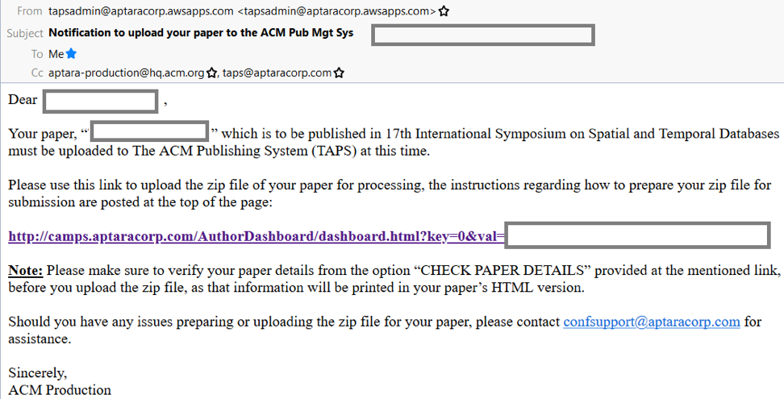

Camera-Ready Guideline
Deadline of the camera-ready version: July 2, 2021 (AOE).
The ACM Publishing System (TAPS) will be used to upload your camera-ready source files and generate the PDF file of your paper. We describe these steps as follows.
Step #1. Submit the copyright form, then get the URL to the ACM Publishing system
First, you will receive the following email regarding the copyright form of your accepted paper. Please follow the instructions there.
After signing your ACM copyright form, you will receive
- (i) an email about ACM copyright text (to be used in Step #3) and
- (ii) an email notification to upload your paper to the ACM Publishing System (to be used in Step #4).
It may take a few hours before you receive the email below:

Step #2. Read the following guidelines:
- https://www.acm.org/publications/taps/word-template-workflow
- https://www.acm.org/binaries/content/assets/publications/taps/acm_taps.pdf
- The following YouTube video
Step #3. Prepare the single-column version of your paper
The ACM Publishing System requires authors to submit the single-column version only (not the two-column version). Then, the system will generate the double-column version automatically (in Step #5).
For Microsoft Word users, please use the following template:
https://www.acm.org/binaries/content/assets/publications/taps/acm_submission_template.docx
For LaTeX users, please use the following template and use “manuscript” for the single-column version:
https://www.acm.org/binaries/content/assets/publications/consolidated-tex-template/acmart-primary.zip
Here are the best practices for LaTeX users to avoid error message in the system.
https://www.acm.org/publications/taps/latex-best-practices
Step #4. Upload the ZIP file of your paper to the ACM Publishing system
Please click the link in the last email obtained in Step #1, and then you will see the following screenshot:
Please prepare the ZIP file of your paper (including source files) according to the instructions in the above screenshot. After uploading your ZIP file, the system will notify you either:
#4.1 Your submission is OK
Please wait for email notification, and then go to Step #5.
#4.2 Error messages
- Example 1: ZIP file with incorrect name
Please wait for email notification, and then go to Step #5.
- Example 2: ZIP file with incorrect directory structure
Please check the error message, fix it, and then upload your ZIP file again.
- Example 3: Other errors or warnings
Please click “Download Validation Error Log” to obtain the detailed error information, for example,
Please check the error message, fix it, and then upload your ZIP file again.
Step #5. Review the generated PDF file
Please click “PDF file”, and check whether you are satisfied with it.
The page limit of this final PDF (double-column generated by the system) would be:
| Type | Page Limit |
|---|---|
| Research | 11 pages |
| Industry | 11 pages |
| Short | 5 pages |
| Demo | 5 pages |
| Vision | 5 pages |
Step #6. Decide whether to “Approve” or “Reject”
If you are satisfied with the generated PDF, click “Approve” in the system.
If you are not satisfied with the generated PDF, click “Reject” in the system, and then you can either choose “Resubmit” or “Contact Support.”
After you choose “Resubmit,” you will go back to Step #4, where you can modify your source files and generate a new PDF. If you are still not satisfied with the generated PDF, you can use the Contact Support option to ask for support from the ACM team, which is supposed to reply your questions within 24 hours.
If there are any questions about the camera-ready version preparation, please contact our proceedings chairs Bin Yang (byang@cs.aau.dk) and Man Lung Yiu (csmlyiu@comp.polyu.edu.hk).